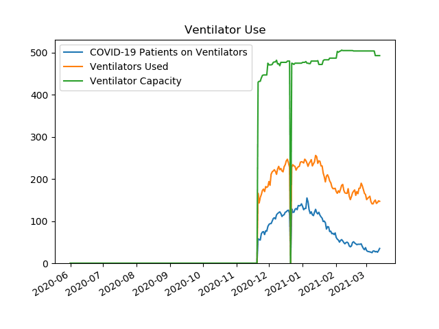
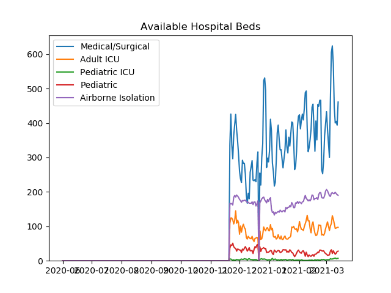
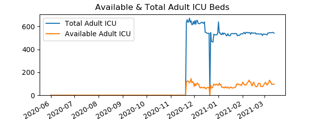
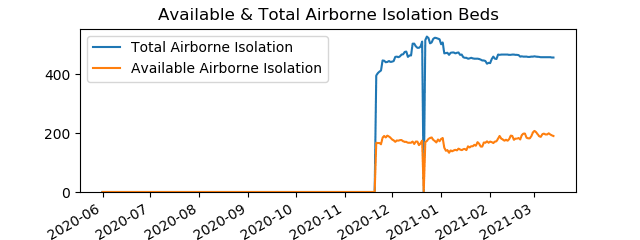
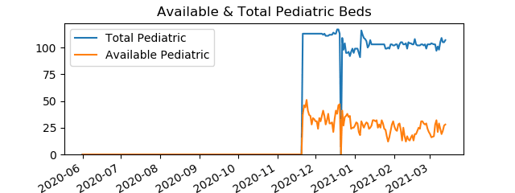

Active COVID-19 Hospitalizations in Southcentral
Data is from
PA Dept Of Health
COVID-19 Current Hospitalizations
Date
COVID-19 Patients Hospitalized
COVID-19 Patients on Ventilators
COVID-19 Adult Patients in ICU
20201121
441
58
86
20201201
750
92
148
20210101
887
135
181
20210131
442
72
92
Ventilator Use
Date
COVID-19 Patients on Ventilators
Ventilators Used
Ventilator Capacity
20201121
58
166
430
20201201
92
194
471
20210101
135
240
477
20210131
72
178
487

Available Hospital Beds
Date
Airborne Isolation
Medical/Surgical
Pediatric
Pediatric ICU
Adult ICU
20201121
167
338
37
5
109
20201201
178
260
31
2
77
20210101
180
319
27
3
87
20210131
167
420
31
2
95

Available & Total Adult ICU Beds
Date
Available Adult ICU Beds
Total Adult ICU Beds
20201121
109
634
20201201
77
621
20210101
87
640
20210131
95
537

Available & Total Airborne Isolation Beds
Date
Available Airborne Isolation Beds
Total Airborne Isolation Beds
20201121
167
395
20201201
178
442
20210101
180
501
20210131
167
438

Available & Total Medical/Surgical Beds
Date
Available Medical/Surgical Beds
Total Medical/Surgical Beds
20201121
338
2238
20201201
260
2241
20210101
319
2512
20210131
420
2675
Available & Total Pediatric Beds
Date
Available Pediatric Beds
Total Pediatric Beds
20201121
37
113
20201201
31
113
20210101
27
99
20210131
31
102

Available & Total Pediatric ICU Beds
Date
Available Pediatric ICU Beds
Total Pediatric ICU Beds
20201121
5
18
20201201
2
18
20210101
3
18
20210131
2
18